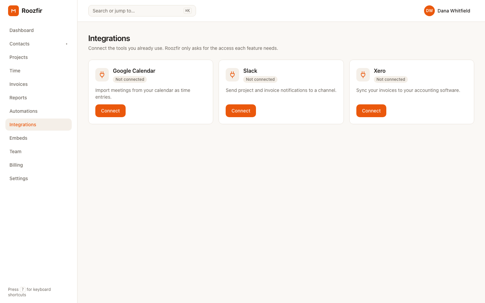
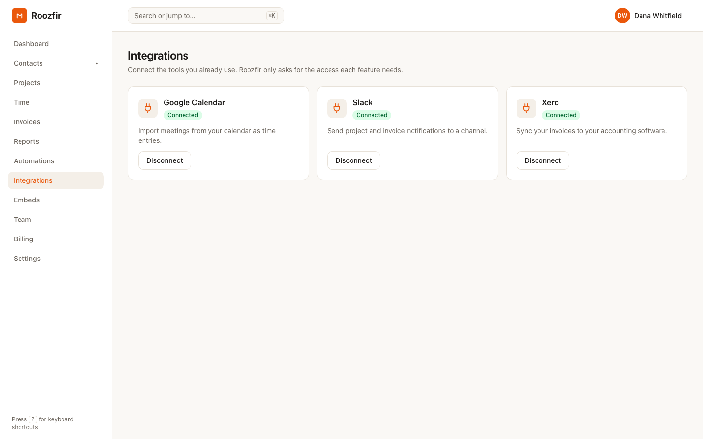

Help Center » Connecting other tools
How to connect Google Calendar
Connect your Google Calendar so Roozfir can turn meetings into time entries. Roozfir only reads your events.
- Click Integrations in the left-hand menu.

The Integrations page with cards for Google Calendar, Slack and Xero, none of them connected - Find the Google Calendar card and click Connect.
- Google Calendar opens in a new screen and asks you to sign in and allow Roozfir to read your calendar events. Choose Allow.
- You land back in Roozfir. The Google Calendar card now says Connected.

The Integrations page with the Google Calendar card showing Connected
Tip: To disconnect later, open Integrations and click Disconnect on the card.